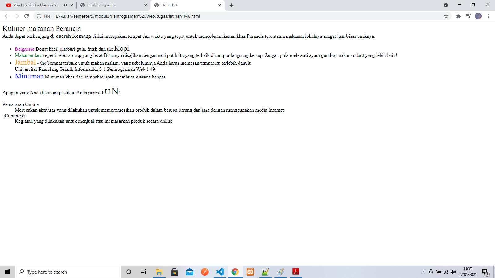
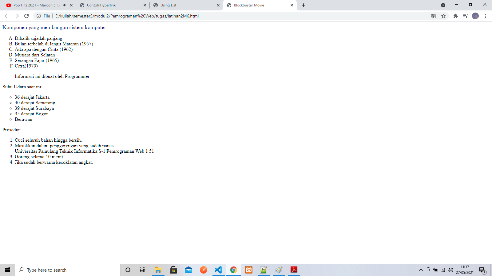
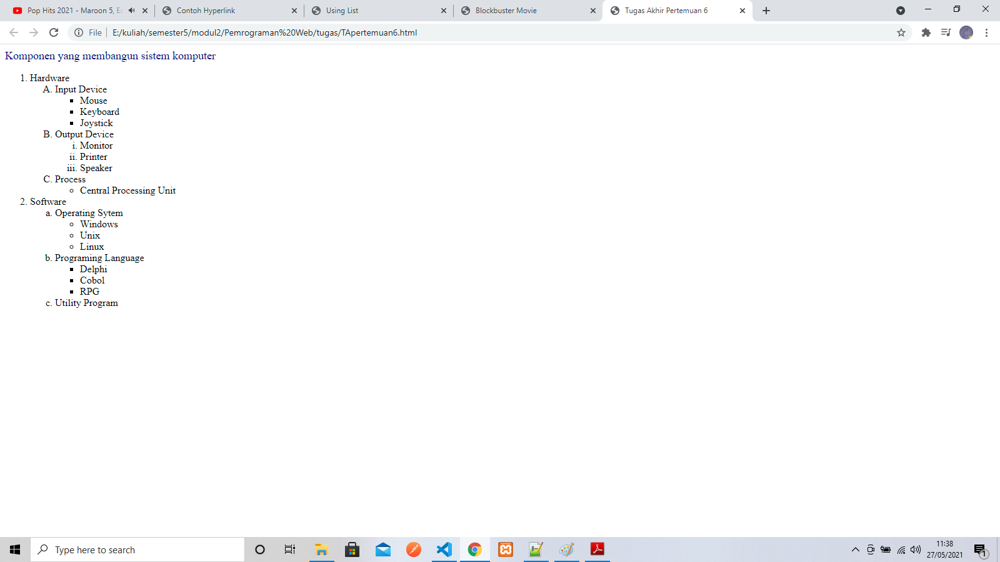

Pertemuan 6
Latihan 1
<xmp> ====================================================== <html> <head><title>Using List</title></head> <body> <font size="5">Kuliner makanan Perancis</font><br> Anda dapat berkunjung <font size="+1">di daerah Kemang</font> disini merupakan tempat dan waktu yang tepat untuk mencoba makanan khas Perancis teruntama makanan lokalnya sangat luar biasa enaknya. <ul> <li><font color="magenta">Beignetse</font> Donat kecil ditaburi gula, fresh dan the <font size="+2">Kopi</font>.</li> <li><font color="GREEN">Makanan laut</font> seperti rebusan sup yang lezat.Biasanya disajikan dengan nasi putih itu yang terbaik dicampur langsung ke sup. Jangan pula melewati ayam gumbo, makanan laut yang lebih baik!</li> <li><font color="ORANGE" size="+2">Jambal</font> - the Tempat terbaik untuk makan malam, yang sebelumnya Anda harus memesan tempat itu terlebih dahulu.</li> Universitas Pamulang Teknik Informatika S-1 Pemrograman Web 1 49 <li><font size="5" color="BLUE">Minuman</font> Minuman khas dari rempahrempah membuat suasana hangat </li> </ul> Apapun yang Anda lakukan pastikan Anda punya <font size="+1">F</font><font size="+2">U</font> <font size="+3">N</font>! <dl> <dt>Pemasaran Online</dt> <dd> Merupakan aktivitas yang dilakukan untuk mempromosikan produk dalam berupa barang dan jasa dengan menggunakan media Internet</dd> <dt>eCommerce</dt> <dd>Kegiatan yang dilakukan untuk menjual atau memasarkan produk secara online</dd> </dl> </body> </html> </xmp>
Hasil Dari Script Tersebut

Latihan 2
<plaintext> ====================================================== <html> <head> <title>Blockbuster Movie</title> </head> <body> <font color="navy" size=4>Komponen yang membangun sistem komputer</font><br> <ol type="A"> <li>Dibalik sajadah panjang</li> <li>Bulan terbelah di langit Mataran (1957)</li> <li>Ada apa dengan Cinta (1962)</li> <li>Mutiara dari Selatan</li> <li>Serangan Fajar (1965)</li> <li>Citra(1970)</li> </ol> <blockquote> Informasi ini dibuat oleh Programmer </blockquote> Suhu Udara saat ini: <ul type="circle"> <li>36 derajat Jakarta</li> <li>40 derajat Semarang</li> <li>39 derajat Surabaya</li> <li>35 derajat Bogor</li> <li>Berawan</li> </ul> Prosedur: <ol type="1"> <li>Cuci seluruh bahan hingga bersih.</li> <li>Masukkan dalam penggorengan yang sudah panas.</li> Universitas Pamulang Teknik Informatika S-1 Pemrograman Web 1 51 <li>Goreng selama 10 menit.</li> <li>Jika sudah berwarna kecoklatan angkat.</li> </ol> </body> </html> </plaintext>
Hasil Dari Script Tersebut

Tugas Akhir
<plaintext> ====================================================== <!DOCTYPE html> <html> <head> <title>Tugas Akhir Pertemuan 6</title> </head> <body> <font color="navy" size=4>Komponen yang membangun sistem komputer</font><br> <ol type="1"> <li>Hardware</li> <ol type="A"> <li>Input Device</li> <ul type="square"> <li>Mouse</li> <li>Keyboard</li> <li>Joystick</li> </ul> <li>Output Device</li> <ol type="i"> <li>Monitor</li> <li>Printer</li> <li>Speaker</li> </ol> <li>Process</li> <ul type="circle"> <li>Central Processing Unit</li> </ul> </ol> <li>Software</li> <ol type="a"> <li>Operating Sytem</li> <ul type="circle"> <li>Windows</li> <li>Unix</li> <li>Linux</li> </ul> <li>Programing Language</li> <ul type="square"> <li>Delphi</li> <li>Cobol</li> <li>RPG</li> </ul> <li>Utility Program</li> </ol> </ol> </body> </html> </plaintext>
Hasil Dari Script Tersebut

<<<<< Back To Menu